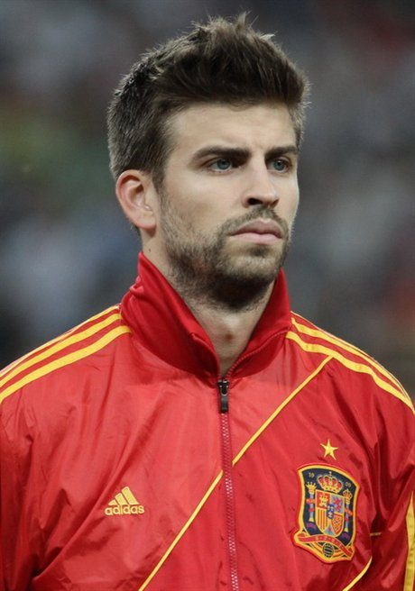

От бумажной салфетки до 47 трофеев: жизнь и наследие Лионеля Месси
Преодолев дефицит гормона роста в Росарио, аргентинский гений построил самую титулованную карьеру в истории мирового футбола — от Каталонии до Парижа и Майами.

Лионель Андрес Месси по праву считается самым титулованным игроком в истории мирового футбола: в его активе 47 командных трофеев на взрослом уровне в более чем 1150 официальных матчах. За карьеру, охватившую свыше двух десятилетий, аргентинский форвард наколотил более 930 голов и отдал свыше 420 результативных передач за клубы и сборную, завоевав восемь «Золотых мячей», шесть «Золотых бутс» и восемь наград лучшему игроку мира по версии ФИФА.
Месси родился 24 июня 1987 года в городе Росарио провинции Санта-Фе, в рабочем квартале Лас-Эрас. Его отец Хорхе Месси работал начальником участка на металлургическом комбинате Acindar в соседней Вилья-Конститусьон, а мать Селия Куччиттини трудилась в цехе по производству магнитов. Лионель был третьим из четырех детей в семье, рос вместе со старшими братьями Родриго и Матиасом и младшей сестрой Марией Соль. В футбол во дворе гоняли и его двоюродные братья Максимилиано и Эмануэль Бьянкукки (Maximiliano / Emanuel Biancucchi), которые позже также стали профессиональными футболистами.
Впервые по мячу Месси ударил в четыре года в местном клубе «Абандерадо Грандоли», где тренером на общественных началах был его отец. Бабушка по материнской линии, Селия, регулярно водила внука на окрестные поля и буквально заставляла тренеров выпускать щуплого мальчишку на газон. Ее уход из жизни незадолго до одиннадцатилетия Лионеля оставил в его душе глубочайший след. Месси практически каждый гол в карьере празднует одинаково — вскидывая указательные пальцы к небу в память о бабушке.

Горнило Росарио и историческая салфетка
В семь лет Месси перешел в «Ньюэллс Олд Бойз» — клуб из Росарио, за который болел с пеленок. За шесть сезонов в составе «Ньюэллс» он забил около 500 мячей за знаменитую команду «Машина 87-го» (The Machine of '87), названную так по году рождения игроков и громившую сверстников по всему региону. В перерывах матчей основы «Ньюэллс» юный Месси часто чеканил мяч на газоне на потеху трибунам, равняясь на кумиров — бразильского феномена Роналдо и плеймейкера «Ривер Плейт» Пабло Аймара.
Удар грянул, когда Лионелю исполнилось 10 лет. Врачи диагностировали у него дефицит гормона роста. Заболевание требовало ежедневных подкожных инъекций, обходившихся как минимум в 1000 аргентинских песо в месяц. Рабочая страховка отца покрыла лишь два года терапии, а руководство «Ньюэллс» нарушило договоренность и отказалось оплачивать дальнейшее лечение. «Ривер Плейт» был готов забрать вундеркинда после просмотра, в котором тот оформил покер, и взять медицинские счета на себя, но «Ньюэллс» наотрез отказался отдавать трансферную карту игрока.
Оказавшись перед угрозой колоссальных расходов, семья через родственников в Каталонии организовала просмотр в «Барселоне» в сентябре 2000 года, когда Месси было 13 лет. Спортивный директор каталонцев Карлес Решак (Carles Rexach) был ошеломлен талантом аргентинца, однако совет директоров сомневался, стоит ли вкладывать столь серьезные деньги в столь юного иностранца. 14 декабря 2000 года, поставленный стороной Месси перед ультиматумом, Решак на обычной бумажной салфетке составил предварительное соглашение, гарантировавшее обязательства «Барселоны».
В феврале 2001 года семья Месси перебралась в квартиру рядом с «Камп Ноу». Адаптация оказалась мучительной. Из-за бюрократических препонов со стороны «Ньюэллс» весь первый год Лионель мог выходить на поле только в товарищеских встречах и матчах чемпионата Каталонии. В раздевалке он держался настолько тихо, что партнеры поначалу считали его немым. Тоска по родине надломила семью: мать с остальными детьми вернулась в Росарио, оставив Лионеля в Барселоне вдвоем с отцом.
«Ла Масия», лавина трофеев и боль «альбиселесте»
К февралю 2002 года Королевская испанская футбольная федерация наконец оформила все документы, открыв Месси путь во все официальные турниры. В 14 лет он завершил курс инъекций гормона роста и занял законное место в легендарной юношеской команде «Барселоны» — Baby Dream Team — рядом с Сеском Фабрегасом и Жераром Пике. В сезоне 2002/03 он наколотил 36 мячей в 30 встречах за команду «Кадете А». А в финале Кубка Каталонии против «Эспаньола», проходившем всего через неделю после перелома скулы, Лионель уже через несколько минут сорвал мешавшую пластиковую маску и за десять минут оформил дубль, обеспечив победу со счетом 4:1.
16 октября 2004 года 17-летний Месси дебютировал за «Барселону» в Ла Лиге. За следующие 17 сезонов он завоевал рекордные для клуба 34 трофея, включая 10 титулов чемпиона Ла Лиги и 4 кубка Лиги чемпионов УЕФА. Забив 672 гола за «сине-гранатовых», он установил абсолютный мировой рекорд по голам за один клуб. В сезоне 2008/09 под руководством Пепа Гвардиолы Месси привел «Барсу» к первому «треблу» в истории испанского футбола, а шесть лет спустя, объединившись в сокрушительное трио «МСН» с Луисом Суаресом и Неймаром, оформил второй исторический европейский «требл» в кампании 2014/15.
В национальной сборной триумфа пришлось ждать гораздо дольше. Выиграв олимпийское золото в Пекине-2008, Месси в 2011 году получил капитанскую повязку «альбиселесте». Он вывел Аргентину в три финала крупных турниров подряд — на чемпионате мира 2014 года в Бразилии, Кубке Америки 2015 года в Чили и юбилейном Кубке Америки 2016 года в США. Все три финала закончились трагическими поражениями в дополнительное время или в серии пенальти. Раздавленный Месси в июне 2016 года объявил об уходе из сборной, но вскоре изменил решение и вернулся в команду.
От Лусаила до Южной Флориды: триумфальный финал
Финансовый кризис и ошибки руководства «Барселоны» привели к внезапному расставанию с каталонским клубом в августе 2021 года. Месси на правах свободного агента перебрался в «Пари Сен-Жермен», где выиграл два титула Лиги 1. Одновременно фортуна наконец повернулась лицом к нему и в сборной. В 2021 году Месси в ранге капитана привел Аргентину к победе на Кубке Америки на стадионе «Маракана» — первому крупному трофею страны за 28 лет. А на чемпионате мира 2022 года в Катаре Лионель забил семь мячей и привел аргентинцев к победе над Францией в драматичнейшем финале на арене «Лусаил», завоевав главный трофей планеты, так долго ускользавший из его рук.
В июле 2023 года Месси подписал контракт с клубом MLS «Интер Майами», бесповоротно изменив статус соккера в Северной Америке. Он помог клубу завоевать первый трофей в истории — Кубок лиг 2023 года — и признавался самым ценным игроком MLS в 2024 и 2025 годах. Со сборной Аргентины он снова выиграл Кубок Америки в 2024 году.
После чемпионата мира 2026 года, финал которого Аргентина 19 июля проиграла Испании, Месси 31 августа 2026 года объявил о завершении карьеры в сборной, сообщил ESPN. 6 октября 2026 года он сыграл прощальный матч против Бенина на стадионе «Монументаль»: Аргентина победила 3:0, а Месси забил пенальти и сделал две голевые передачи, передает AP. Итог его карьеры в сборной — 208 матчей и 126 голов.